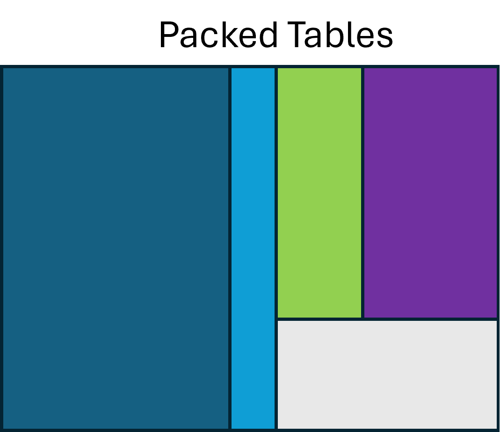
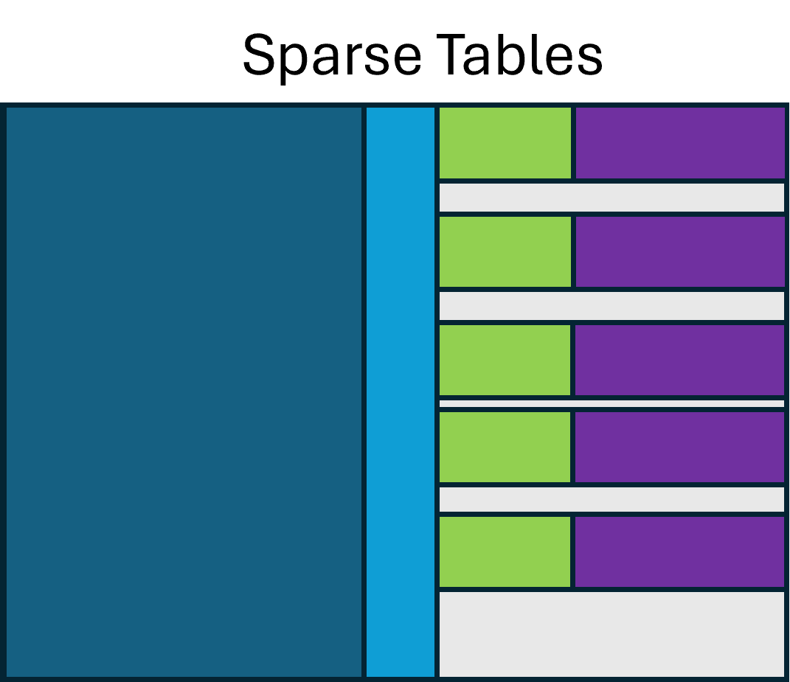

Packed Parallel Metadata Tables¶
The spectra_metadata.parquet and chromatograms_metadata.parquet files store
multiple schemas in parallel. The root schema is made up of several branched
"group" (Parquet) or "struct" (Arrow) facets, any of which may be null at any
level. We borrow relational-database language — primary key and foreign
key — to describe how the parallel tables interconnect.
The example below shows two rows of related MS1 and MS2 spectra. Treat
scan.source_index, precursor.source_index, precursor.precursor_index,
selected_ion.source_index, and selected_ion.precursor_index as foreign keys
with respect to spectrum.index, the primary key:
precursor.source_indexrefers to thespectrumthat thisprecursorrecord belongs to.precursor.precursor_indexrefers to thespectrumthat is the precursor of the spectrum referenced byprecursor.source_index.- Together,
(precursor.source_index, precursor.precursor_index)forms a compound key.
Any of these columns may be null, meaning that such a record does not exist in
the table. The same applies to the selected_ion facet.
| spectrum | scan | precursor | selected_ion | ||||||||
|---|---|---|---|---|---|---|---|---|---|---|---|
| index | id | time | MS_1000511_ ms_level |
source_ index |
MS_1000616_preset_ scan_configuration |
source_ index |
precursor_ index |
isolation_ window |
source_ index |
precursor_ index |
MS_1000744_selected_ ion_mz |
| … | |||||||||||
| 502 | scan=502 | 20.51 | 1 | 502 | 3 | 503 | 502 | {…} | 503 | 502 | 233.5 |
| 503 | scan=503 | 20.531 | 2 | 503 | 2 | 504 | 502 | {…} | 504 | 502 | 562.3 |
| … | |||||||||||
Controlled Vocabulary Terms¶
Like mzML, mzPeak makes heavy use of controlled vocabularies to represent rich metadata. mzPeak uses CV terms in three ways:
- As columns. When a term is used as a column name, that column's values are
either the defined value of the term's expected type (e.g. via
has_value_type) or a CURIE for a child of the column-name term. For example:- The column
MS_1000525_spectrum_representationholds CURIEs for a child term —MS:1000127"centroid spectrum" orMS:1000128"profile spectrum" — as appropriate for the spectrum in that row. - The column
MS_1000511_ms_levelholds an integer value.
- The column
- As structural elements. In several places — such as the array index — CURIEs reference named concepts that explain the semantics of a data structure without changing its shape.
- As pluggable metadata carriers in
parametersarrays, analogous to<cvParam/>in mzML. Every schema facet of a metadata table may carry aparameterscolumn.
The parameters list¶
The parameters column may be present in any facet of a metadata table. It
MUST be a list of the following schema:
optional group field_id=-1 parameters (List) {
repeated group field_id=-1 list {
optional group field_id=-1 item {
optional group field_id=-1 value {
optional int64 field_id=-1 integer;
optional double field_id=-1 float;
optional binary field_id=-1 string (String);
optional boolean field_id=-1 boolean;
}
optional binary field_id=-1 accession (String);
optional binary field_id=-1 name (String);
optional binary field_id=-1 unit (String);
}
}
}
The parameters.list.item.value group has a slot for each data type, so a
parameter can take exactly one of these value types; unused slots MUST be
null. A parameter MAY carry a unit, given as a CV-term CURIE in
parameters.list.item.unit. As with mzML's <userParam/>, an uncontrolled
parameter may be stored simply by leaving parameters.list.item.accession empty.
Naming and column promotion
- Parquet columns MUST be uniquely named, so if a parameter appears more
than once in a single entry it MUST be stored in the
parameterscolumn. - Writers are encouraged, when sufficient context is available, to promote parameters that are present in most rows of a table to columns. This is more space-efficient and enables predicate filtering.
Open item — lists and maps
Whether parameters values should also support list- or map-valued types is
still under discussion.
Typing parameter values¶
When a term has a value and it is stored in the parameters list, the value
MUST use one of the value types in the fixed schema above. When a term is
instead promoted to its own column, the value may use any Parquet data type.
This flexibility lets writers pick an appropriate size and precision, but it can
create redundant reader code — a column expected to hold an integer might be
written as an 8-, 16-, 32-, or 64-bit integer, signed or unsigned. Some
languages handle this naturally with dynamic typing or generics; others need a
separate implementation per physical type.
Recommended physical types:
- Integral values that are not indices or identifiers — prefer signed 32- or 64-bit, as needed to cover the value's domain.
- Indices or identifiers represented as integers — prefer unsigned 32- or 64-bit. Dictionary encoding reduces most cases to ~8 bits per variant on disk anyway.
- Floating-point values — prefer 64-bit doubles unless precision is truly of no concern. For repetitive values (e.g. collision energy), dictionary encoding drops the on-disk cost well below 32 bits per value.
- Strings and lists — prefer 64-bit offsets ("large strings"/"large lists"), but write code that supports both 32- and 64-bit offsets. This matters especially for strings, where the offset is a byte offset, not an item offset.
Column name inflection¶
When a CV-term concept is represented as a column, the column name SHOULD be constructed by the following inflection rules:
- The base column name is
${CV_CODE}_${CV_ACCESSION}_${CLEANED_NAME}where:${CV_CODE}identifies the controlled vocabulary itself —MSfor PSI-MS,UOfor the Units of Measurement Ontology.${CV_ACCESSION}is the accession number. ForMS:1000016"scan start time" this is1000016.${CLEANED_NAME}is the term's name with any character that is not valid in a Parquet column name replaced by_. The regular expression/[^a-zA-Z0-9_\\-]+/matches all such characters in ASCII. ForMS:1000016, the result isMS_1000016_scan_start_time.- Because the string "m/z" appears so frequently, it SHOULD be rewritten
as
mzto avoid extra underscores. ForMS:1000504"base peak m/z", the result isMS_1000504_base_peak_mz.
- If a single unit applies to every value in the column, it SHOULD be
appended as
_unit_${UNIT_CV_CODE}_${UNIT_CV_ACCESSION}. For example,MS_1000528_lowest_observed_mz_unit_MS_1000040isMS:1000528"lowest observed m/z" with unitMS:1000040"m/z". - If the unit varies across the column, it SHOULD be carried in a
separate column whose name is the inflected name with
_unitappended, whose values are the unit CURIEs.
Null semantics for metadata¶
A row value that is null is treated as absent — having no value. If a foreign
key column is null, assume the corresponding record does not exist (as when an
MS2 spectrum is stored without its MS1 precursor, as in MGF files, or in a slice
of a run). If the primary key of a facet is null, the reader SHOULD skip
that facet's columns for that row.
A writer SHOULD minimise the number of interspersed all-null rows, though
this is not strictly required. Minimising interspersed nulls improves
compressibility. In the figures below, "Packed Tables" keeps the rows of each
parallel facet contiguous, while "Sparse Tables" intermixes rows of nulls.

